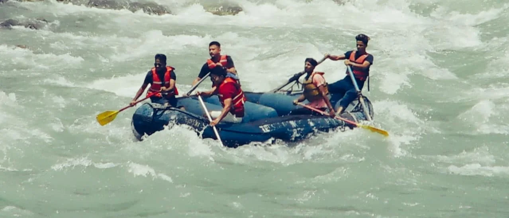
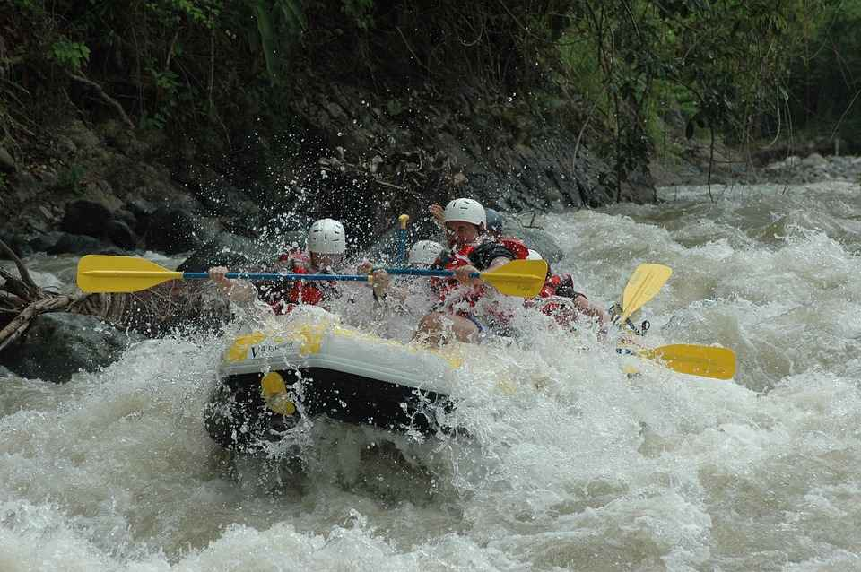
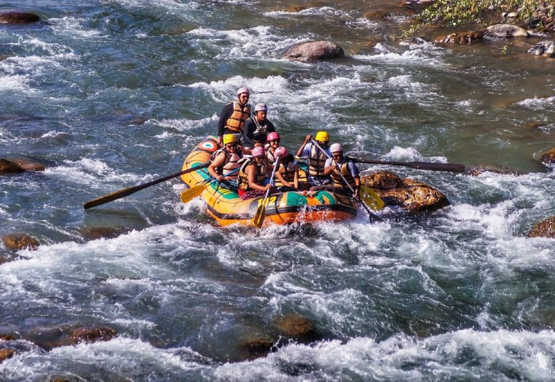
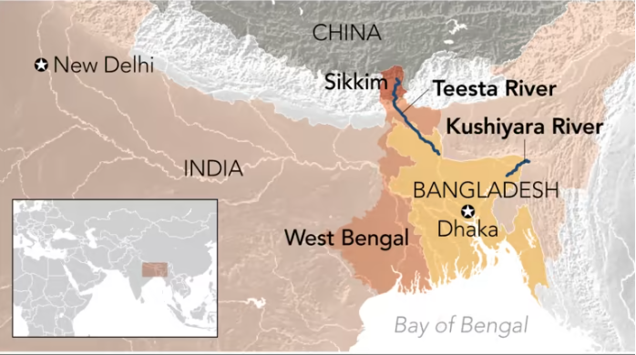

Teesta River



The Teesta River, flowing through the picturesque valleys of Sikkim and West Bengal, offers an exhilarating rafting experience. This adventure sport attracts thrill-seekers from all over the country due to the river's turbulent waters and scenic surroundings.
Rafting in Teesta River is best enjoyed during the monsoon and post-monsoon seasons, when the water levels are high and the rapids are more challenging. The rafting stretch starts from Melli and goes up to Geil Khola in Kalimpong, covering various grades of rapids that range from easy to moderately difficult.
The adventure is not just limited to the thrill of rafting; it also offers breathtaking views of the lush green hills, terraced farmlands, and quaint villages along the riverbanks. Rafting trips are usually organized by experienced guides and include all necessary safety equipment, making it a safe and enjoyable experience for both beginners and seasoned rafters.
 Maplinked